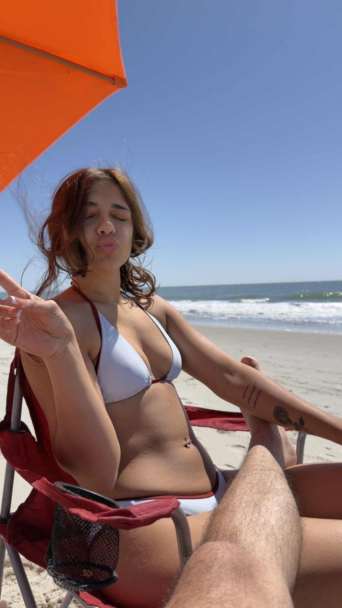
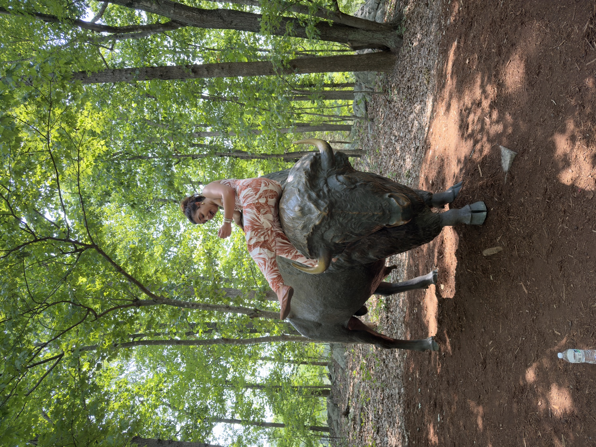
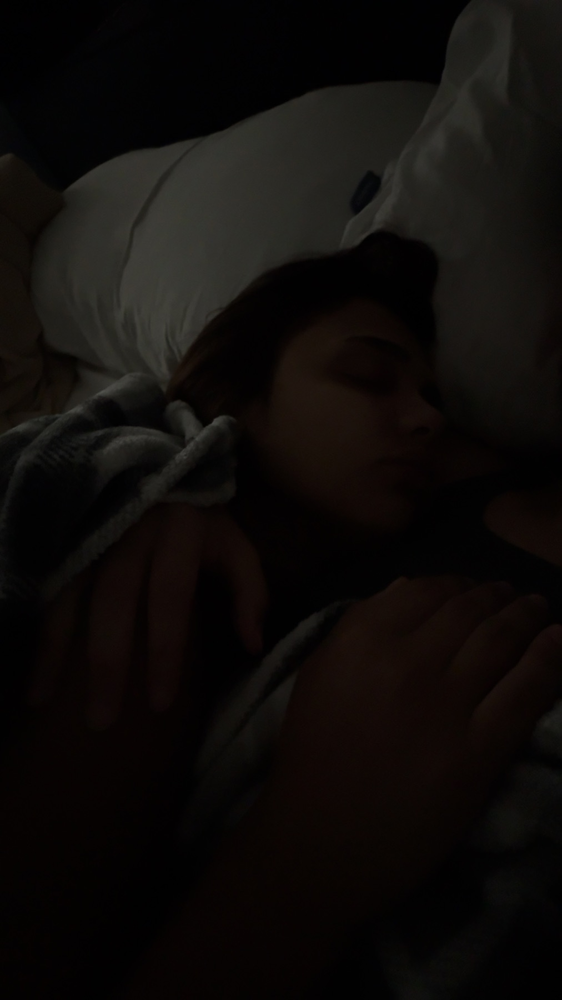
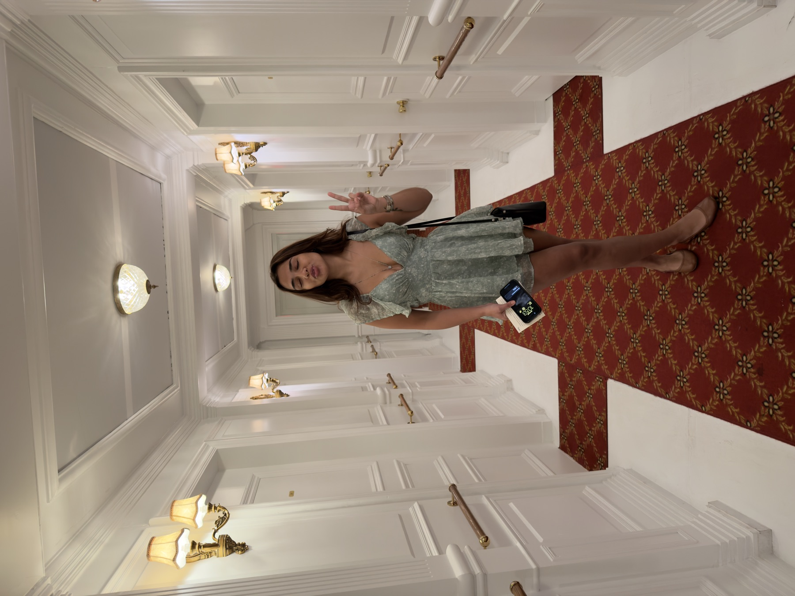
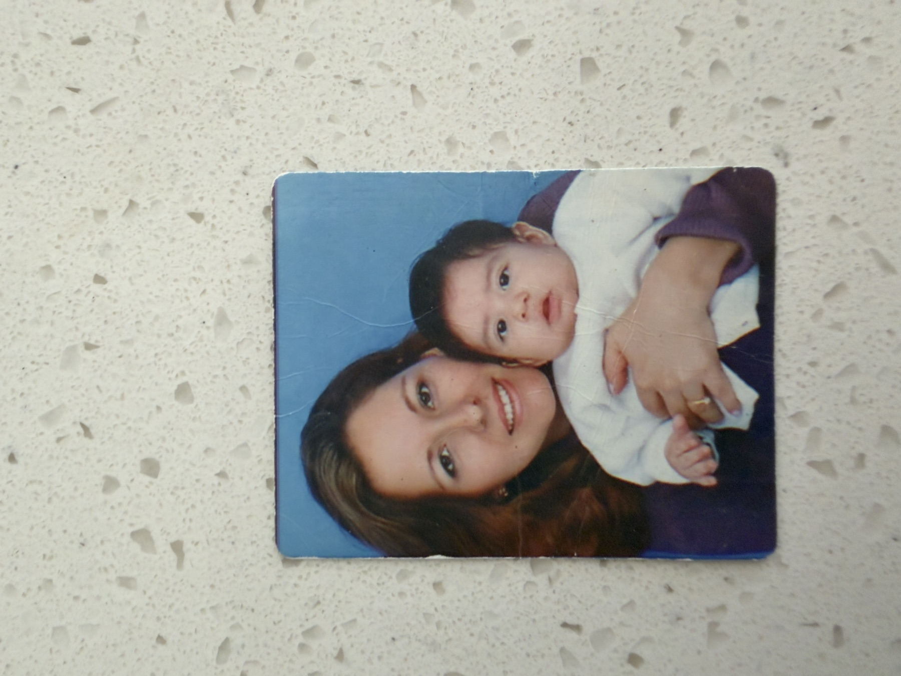
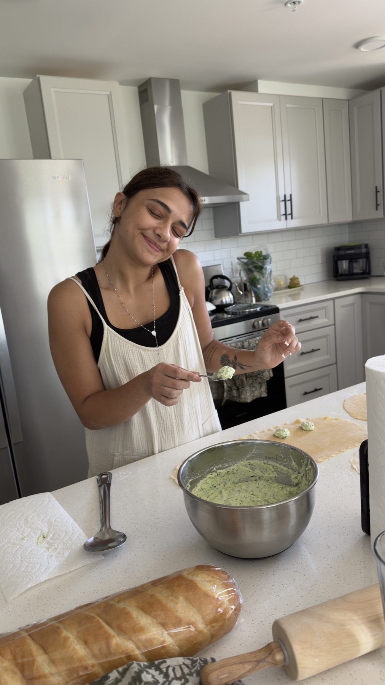
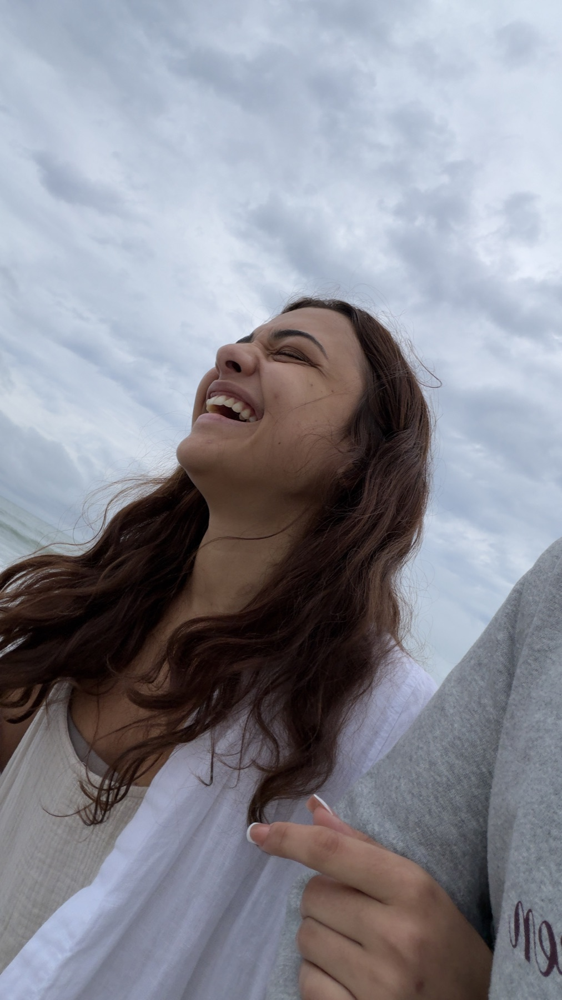
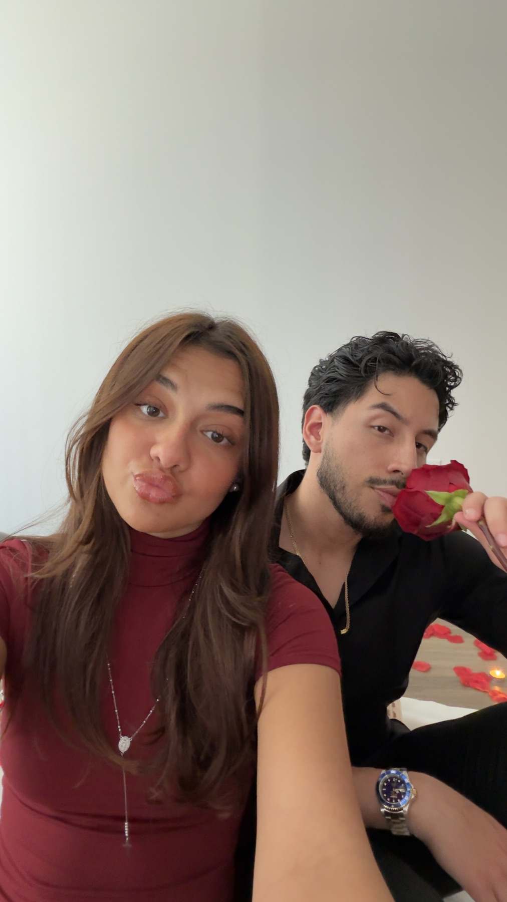

Hola María, esta es la carta más especial que he escrito en mi vida. La escribo para expresar todo el aprecio y el amor que tengo por ti. Desde el día que te conocí, nunca me imaginé sentir lo que siento por ti, porque sinceramente no esperaba encontrarte ni estaba buscando a nadie. Pero conocí a una mujer maravillosa que trajo miles de enseñanzas a mi vida y que ha luchado por sobrevivir en la vida, y por eso te admiro; una mujer que se ha adaptado a muchos escenarios, y eso muestra que eres una guerrera. Me has demostrado que aunque la vida sea difícil con nosotros, nosotros podemos traer ternura y amor a este mundo, así el mundo no haya sido recíproco con nosotros: es nuestro deber darle amor a quien más lo necesita.
Lo que aprendí de ti
Quiero que sepas que aunque tal vez no nos digamos las mejores cosas todo el tiempo, hay muchísimas cosas que aprendí de ti que aplico en mi día a día, porque me hiciste mejor persona gracias a tus enseñanzas. Pude ver el mundo con unos ojos de amor hacia la persona menos favorecida. Pude ver que la ternura mueve montañas más que unas palabras de coraje. Aprendí que los pequeños detalles son los que más importan: una flor cuando nos peleábamos; un “I love you MORE than the THING”; un buenos días con cariño; un beso en la frente cuando te veía dormir; un abrazo y un beso antes de ir al trabajo; un avísame cuando llegues a salvo, que despertó en mí las ganas de abrazarte cuando tenías frío en la noche; estar pendiente de si ya habías comido; un abrazo fuerte cuando menos lo esperábamos; una palabra de aliento cuando estábamos a punto de rendirnos; una palabra de positivismo cuando todo iba mal; un yo creo en ti cuando se perdía la fe; un lo vamos a superar juntos cuando te sentías sola; un feliz cumpleaños donde el regalo no importaba, sino la intención. Muchas gracias por todos esos innumerables pequeños detalles que me enseñaste.
Cada pequeño “buenas noches” antes de dormir y cada “buenos días” para empezar el día, cada comida que podíamos comer juntos, cada cama que tendíamos juntos, unió y fortaleció ese lazo, enseñándome que no tengo que hacerlo todo solo, que tú estás ahí para apoyarme siempre. Que no todo en la vida se trata de planear hasta el último detalle, que las cosas espontáneas también están bien y le dan sabor a la vida. Entendí que la maravilla del mundo está en poder compartir las cosas con la persona que amas.
Los momentos que atesoro
Cada conversación que tuvimos en la madrugada fue mágica para mí, porque cinco minutos contigo eran como diez horas con cualquier otra persona. Disfrutaba cada minuto y aun así pasaban las horas sin darnos cuenta. Cada viaje que tuvimos mientras sostenías mi mano me hacía el hombre más feliz del mundo. Cada noche que roncabas en mi pecho era música para mis oídos.



Cada comida que me hiciste me sabía a gloria, no porque estuviera exagerando, sino porque la hiciste con tus manos. Para mí, todo lo que tus manos y tu corazón pudieran cocinar era lo mejor que yo podía comer ese día, porque lo hacías desde el corazón.
Cada vez que me contabas sobre tu infancia en Italia —cómo cogías caracoles en la parte de atrás de tu casa, las plantas enredaderas, los pequeños barcos que hacía tu abuelo en madera— eran las mejores historias que había escuchado, porque era el origen de la persona que se estaba convirtiendo poco a poco en mi todo.
Nunca pensé enamorarme tanto de una persona al punto de escribir una carta como esta. Siempre pensé que el amor era simplemente una mezcla de fluidos en el cerebro que producía dopamina, pero me enseñaste que el amor se trata de hacer sacrificios por la otra persona. Créeme cuando te digo que hice mi mejor esfuerzo día tras día por ser la mejor versión de mí, por convertirme en el mejor novio, el mejor esposo y padre que pudiera ser, porque sé que un día mi hijo me va a ver y me va a preguntar cómo ser un buen hombre, y tengo que estar listo para decírselo.

Lo que siempre quisiste saber de mí
Esto que estoy a punto de contarte nadie en mi vida lo ha escuchado; nunca se lo he contado a nadie. Pero si esta es la última vez que nos vamos a ver, quiero darte, como regalo, un vistazo a lo más profundo de mi ser y de mi corazón.
Algo que siempre me pediste fue conocer un poco de mi infancia, así que quiero contarte por qué soy como soy. Desde pequeño siempre fui muy terco. Fui un niño bastante problemático, y me la pasaba en la rectoría del colegio por no portarme bien o no hacer lo que tenía que hacer. La gente no entendía por qué era así, siendo tan inteligente como decían que era.

Desde pequeño siempre fui un niño que sabía que era diferente, que no creía todo lo que me decían; siempre estaba en busca de la verdad y de aprender. Siempre fui muy curioso para todo, y mi hambre de aprender parecía que nunca terminaba. Todos mis amigos siempre notaron la madurez que tanto me caracteriza, y desde entonces me apodaron “El Patro”, porque solucionaba los problemas de todos, ya fuera adentro o afuera en la calle. Además, siempre fui el psicólogo de mis amigos, tratando de sugerir la mejor manera de reconciliar sus relaciones, lo cual me obligó a aprender sobre el amor y la psicología.
Durante un tiempo mi vida se tornó muy difícil por problemas económicos, pero no me dejé rendir por eso. Nunca le reproché nada a mi madre, porque sabía que ella estaba dando todo lo que tenía. Verla sufrir por problemas económicos me hizo prometerle a Dios que nunca más ella, ni mi esposa, tendrían que preocuparse por qué íbamos a comer o de dónde vendría nuestra siguiente comida. Tuvimos que mudarnos, entre muchas otras cosas.
No crecí rodeado de muchos lujos, ya que mi padre falleció cuando yo tenía meses de nacido. No tener una figura paterna me marcó mucho. Esto hacía que le preguntara a mi mamá todas las noches cuándo vendría mi papá, por qué mi papá no me amaba y no venía a buscarme, qué había hecho mal para que él no quisiera estar conmigo. Mi mamá no sabía cómo responder, y lloraba diciéndome que no era mi culpa, sin saber cómo explicarme qué era la muerte y cómo había fallecido. Simplemente decía que había sido Dios quien se lo había llevado, sin que yo supiera realmente qué significaba eso.
Durante mucho tiempo fui ateo, porque pensaba: ¿cómo era posible que Dios no me amara y me hubiera arrebatado a mi papá? No me parecía justo. El día del padre en el colegio me escapaba, porque sabía que todos los niños estarían compartiendo, riendo, hablando de lo geniales que eran sus papás, mientras yo tenía la silla vacía donde se suponía que estaría el mío.
Te cuento esto para abrirme contigo, porque siento que era algo que me pediste y que nunca hice. No es fácil escribir todo esto, pero es un pedacito de mi historia, y esto me marcó para ser el hombre que soy hoy en día. Juré que cuidaría mi salud, que comería bien para durar muchos años y ver a mis hijos crecer, que haría ejercicio, que sería inteligente, para poder ser el mejor papá y esposo que cualquier familia pudiera tener, porque eso fue algo que ni yo ni mi mamá tuvimos. Estuve años enojado con Dios por quitarme a mi padre, por castigarme, preguntándome qué había hecho yo para merecer eso. Esa es la razón por la que trabajo tan duro, me cuido tanto, y trato de ser el mejor novio y esposo: para poder dar lo que yo nunca tuve.
Pero hubo varios momentos de mi vida en los que estuve cerca de la muerte, y, como si un ángel del cielo me protegiera, salí sano y salvo de cada uno de ellos. Era como si el universo me estuviera diciendo: “aquí estoy, no te castigué, no estoy enojado, y te voy a proteger siempre.” Desde esos momentos volví a creer en Dios.
Lo que admiro de ti
Sin importar todo lo que pasó entre nosotros, nunca quiero que las partes difíciles de nuestra relación borren todo lo hermoso que vi en ti ni todo lo que trajiste a mi vida. No cambiaría nada si cambiarlo significara arriesgarme a nunca haberte conocido, porque gracias a ti soy una mejor persona, y siempre estaré agradecido por eso. Hay tantas cosas que admiro de ti que probablemente nunca te dije lo suficiente.

Admiro profundamente tu sentido del humor, porque es tontito pero siempre tiene en cuenta a los demás. Amo tu risa, tus chistes tontos y la manera en que me hacías reír cuando menos lo esperaba. Admiro tu sentido de la justicia y la manera en que te importan las personas que a veces no pueden defenderse: nunca le has tenido miedo a defender a alguien que crees que está siendo tratado injustamente, especialmente a quienes tienen menos, no tienen voz, o están siendo intimidados. Eso es algo de ti que respeto genuinamente, y espero que nunca lo pierdas.

Amo la manera en la que siempre puedes encontrar algo bueno incluso en las peores situaciones, cómo siempre le sacas un chiste o ves que no es tan malo como parece. Amo también que no le tienes miedo a la vida, que puedes vivir como si hoy fuera tu último día. Gracias por enseñarme que hay más en la vida que planearlo todo; trajiste espontaneidad a mi vida de una manera que no sabía que necesitaba, la forma en que bailabas conmigo, tu dulzura, y todas las pequeñas maneras en las que me mostrabas cariño y me hacían sentir amado.
Amo lo buena que eres con los niños. Me enamoré de todo el amor que tienes hacia ellos de forma incondicional, tu manera de compaginar con ellos y entender su naturaleza, porque sé que a ti te hubiera gustado tener a alguien así cuando eras pequeña, y de alguna manera has decidido: “tal vez yo no tuve esto, pero sí voy a tratar de dárselo a ellos, porque lo merecen, así yo no lo haya tenido.”
Estoy agradecido por el tiempo que me diste, los lugares a los que fuimos, las conversaciones que tuvimos, las noches en las que hablábamos durante seis horas seguidas y solo nos reíamos, las cosas que vivimos juntos, el amor y la intimidad que compartimos cuando nos convertimos en uno, y todos los recuerdos que ahora son parte de mi vida porque tú estuviste en ella.
Lo que espero para ti
Espero que encuentres lo que realmente quieres de tu vida y le pongas todo el corazón. Genuinamente creo que puedes tener un impacto en este mundo porque te importan profundamente las personas. Espero que descubras exactamente dónde quieres poner esa parte de ti y construyas una vida de la que te sientas orgullosa.
Y sin importar hacia dónde nos lleven nuestras vidas de aquí en adelante, una parte de ti siempre tendrá un lugar en mi corazón. Te amé, te amo, y siempre estaré agradecido de que nuestras vidas se hayan cruzado. Estoy orgulloso de ti por todas las cosas hermosas que vi en ti, y espero que algún día puedas mirar atrás a nuestro tiempo juntos y recordar también las partes hermosas.
Honestamente hay tantas cosas más que podría escribir que probablemente no cabrían todas en una sola página. Este mundo es un mejor lugar porque tú estás en él, y mi corazón es más grande porque tú estuviste en él. Me enseñaste a demostrar mejor el amor, a expresarlo más abiertamente, y a permitirme vivir cosas que quizás, de otra forma, habría estado demasiado ocupado planeando como para experimentar.

Gracias. Gracias. Gracias.
Gracias por todo lo hermoso que me diste.
Te amo.